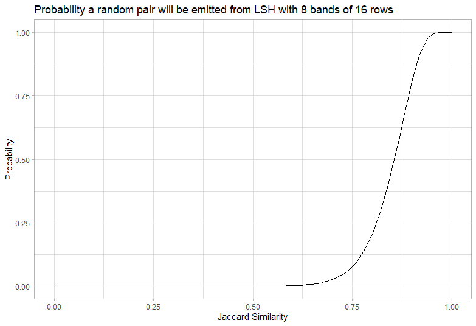
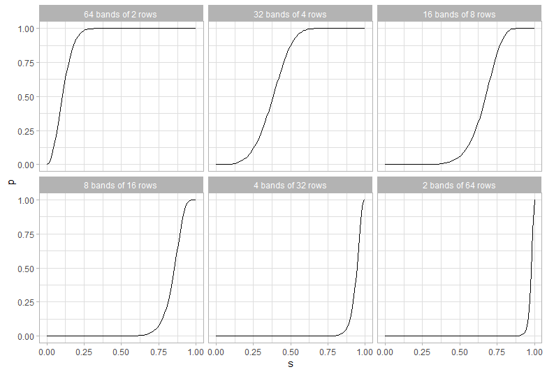
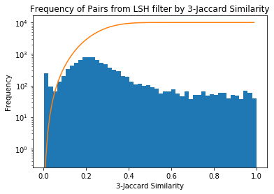

Searching for Near Duplicates with Minhash
I’m trying to find near duplicates texts in the Adzuna Job Salary Predictions Kaggle Competition. In the last article I built a collection of MinHashes of the 400,000 job ads in half an hour in a 200MB file. Now I need to efficiently search through these minhashes to find the near duplicates because brute force search through them would take a couple of days on my laptop.
MinHash was designed to approach this problem as outlined in the original paper. Finding exact duplicates was easy because we were checking for equality. If we had a new duplicate document we could use a hash table to quickly see if we had already seen it. Similarly here we group our MinHashes into bands that we store in a hash table to find collisions. The details are covered well in Chapter 3 of Mining Massive Datasets by Ullman et al. and chapter 6 of Gakhov’s Probabilistic Data Structures and Algorithms for Big Data Applicatoins.
This approach of putting similar things in the same bucket is called Locality Sensitive Hashing (LSH). There are a whole family of these for different distances, such as bit-sampling for Hamming Distance and SimHash for Cosine Distance.
LSH can work really well as an online algorithm to efficiently check for near-duplicates in a large corpus, by storing and adding to these band hash tables.
Picking bands and rows: The S-curve
We have some fixed number of hashes and need to group them into bands of equal rows for LSH. The way we group them changes the sensitivity. Having few bands with many rows will only get collisions between pairs with a very high Jaccard similarity. Having many bands with few rows will get collisions between pairs with a very low Jaccard similarity.
We use our hashes to create b bands each containing r rows (where their product is at most the number of hashes). We then collect all items that have the same hash accross all r rows for any band, which is a simple lookup. This can be used to get the probability a pair will occur in the same band:
- The probability that a given row is the same is the Jaccard similarity s (as discussed in the previous article on MinHash)
- The probability that a given band of r rows agree is \(s^r\), because they are each independent
- The probability that a given band of r rows do not agree is \(1 - s^r\)
- The probability that the r rows don’t agree for any of the b bands is \((1 - s^r)^b\) because they are independent
- The probability that the r rows agree for at least one of the b bands is \(1 - (1 - s^r)^b\)
This curve is a high-pass filter and it looks a bit like an “S”, so we call it an S curve.

We need to tune our number of rows and bands to capture the pairs with similarity we want and exclude the pairs we don’t want. We can always post-process to exclude false positives with low similarity (by calculating the exact similarity), but any false negatives can’t be recovered. However since there are typically orders of magnitude more pairs with low similarity we need the probability to be very very low for the calculation to be tractable.
Analysis of the S-Curve
A little calculus helps understand how the parameters affect the shape of the curve. The probability of emission from the LSH as a function of similarity s is \(P(s) = 1 - (1 - s^r) ^ b\). The slope of this curve is \(P^\prime(s) = r b (1 - s^r)^(b-1) * s ^ {r - 1}\), which is always increasing. This means the curve is a good high pass filter.
Calculating where the second derivative is zero gives the curve is steepest at \(\sqrt[r]{\frac{1 - \frac{1}{r}}{b - \frac{1}{r}}}\). We’ll call this point the threshold of the curve, because it’s close to where it starts letting in values. This is approximately \(\hat{s} = \sqrt[r]{\frac{1}{b}}\), and the approximation is better for larger r. For b and r larger than about 4 the probability at the threshold is \(1 - e ^ {-1} \approx 0.6\), so it is close to the midpoint between accepting and rejecting. The slope at this point is around \(\frac{r} {e \hat{s}}\), which gives a first-order width of the s.
The upshot of all this is that if you double the number of rows and square the number of bands you get the same threshold with approximately half the width. Because the total number of hash functions required is the product of the number of bands and rows, it gets expensive to decrease the width because the bands required is large. It’s also easier to make sharp cutoffs for relatively large thresholds.
Choosing a practical cutoff
Given that we have 128 permutations how do we choose the cutoff? We need to pick r and b with a product at most 128 (so for example 16 and 8 would do, as would 5 and 25).
Because we can always filter out false negatives but can’t retrieve false positives the target should be to remove the bulk of texts with a very small overlap. When we looked at the 4-Jaccard near duplicates they were similar above about 0.5, and very different below 0.05, so we want to capture this threshold. So ideally for ads with a similarity below 0.05 there should be a very small chance (say 0.1%) that they get included and for ads with similarity about 0.5 there should be a high chance (say 99%) that they are included.
Looking some different values for b and r shows the tradeoffs:

The best solution seems to be 42 bands of 3 rows. At 0.5 it’s got a 99.6% probability of inclusion, and at 0.05 it has a .5% chance of inclusion.
Don’t use threshold in DataSketch
The datasketch library provides an argument for threshold for the MinHashLSH. It uses a deeply flawed way to try to calculate this. It tries estimate the error by integrating the S-curve, which doesn’t make sense because it isn’t a probability denisty. If the integral was divided by the length of the interval it would be the average probability over the interval, but as it is I’m not sure how to interpret this quantity.
I raised an issue about this, but I closed it because:
- Existing users have probably tuned the threshold and depend on the behaviour
- I can’t think of a way to implement the existing interface with weights (unless they’re deprecated)
- There’s no clear choice for the threshold; the value
(1/b)**(1/r)is a reasonable candidate, but it has a different meaning to the API - You can work around it by passing the number of bands and rows as a tuple into
params - I found it difficult to communicate my argument (but I’m pretty sure it doesn’t make sense)
In practice it makes sense to tune the curve based on the value where the S-curve goes below ~0.1% or above 99% which is straightforward with a root finder, and just pass in these parameters.
Implementation
I’m continuing to use the datasketch library for finding near duplicates.
We can then use MinHashLSH to find all items with approximate Jaccard distance, passing in the The underlying library lets you tune the tradeoff between false-positives and false-negatives with weights, but I’ll use the default of equal weights. To ensure we only get each pair once for each item we first search for nearby items with query and then add it to the collection with insert.
def lsh_similar(minhashes, bands, rows):
lsh = MinHashLSH(num_perm=num_perm, params=(bands, rows))
for i, mh in enumerate(tqdm(minhashes)):
# Check if duplicate of already seen item
for j in lsh.query(mh):
yield (j, i)
# Add to the seen items
lsh.insert(i, mh)I visualise this as walking accross the upper-triangle of the matrix of all pairs; in the first column there’s nothing to check, in the second column you just need to check the first row, in the third column you need to check the first two rows. You’ve got every possible pair one; because the matrix of distances is symmetric and zero along the diagonal you know all the information. This does mean the approach is quadratic in time, but you could store the state of the LSH (so you don’t need to regenerate it every time) and even use it for online processing.
It’s possible to directly walk the buckets using lsh.hashtables; I’ll discuss that more in the next part.
For the 400,000 job ad pairs it takes 15 minutes to get all pairs with 42 bands of 3 rows, yielding around 7 million pairs, which is much smaller than the full 80 billion possible pairs!
similar_all = list(lsh_similar(minhashes, 42, 3))If we look at the frequency of results against the 3-Shingle Jaccard Similarity we see there’s a spike around 0.25 near the threshold of the S-curve (the S-curve has been overlaid in orange). This is to be expected as the number of pairs grows very steeply with decreasing similarity. There’s a small spike near 0 where the probability is very low, but the number of pairs is quite large.

Now we have the pairs we need to work out how to interpret and use them. If you want to produce S-curve plots, these were produced using this R script.